03. Mạch tích hợp (IC) và kỹ thuật dồn kênh
Từ một cổng logic đơn lẻ (SSI) tới vi xử lý hàng triệu transistor (VLSI), quy mô tích hợp quyết định cách đóng gói, cách kiểm tra và cách sử dụng một linh kiện. Module này trình bày các mức tích hợp, kỹ thuật đóng gói IC, và các mạch MSI phổ biến nhất trên máy bay: bộ giải mã, bộ mã hoá và bộ dồn kênh (multiplexer).
CO/CLO: CLO2Thời lượng (ước tính): ≈ 8,8 giờ lý thuyết60 slideCâu hỏi: 55 (45 gốc)
Slide: Integrated circuit and multiplexing tr.1-60 · Tooley Ch.8-9 (tr.139-164) · Floyd Ch.6 (tr.313-386); công nghệ IC: Ch.15 · Bản đồ nội dung sách
Tooley: Ch.8 Integrated circuits (p.139-148) + Ch.9 MSI logic (p.149-164): fan-in/out, decoders, encoders, multiplexers
Floyd: Ch.6 Functions of Combinational Logic (p.313-386): decoders, encoders, multiplexers, demultiplexers, comparators; công nghệ chế tạo IC đối chiếu thêm Ch.15 Integrated Circuit Technologies (p.855+)
Tooley tách 'công nghệ IC' (ch.8) và 'ứng dụng MSI' (ch.9) thành 2 chương; Floyd gộp toàn bộ ứng dụng MSI vào Ch.6 và để công nghệ chế tạo riêng ở cuối sách (Ch.15).
- Quy mô tích hợp: từ SSI tới VLSI
- Fan-in và fan-out
- Bộ giải mã và bộ mã hoá (decoder/encoder)
- Bộ dồn kênh (multiplexer/data selector)
- Áp dụng trong hệ thống avionics
📷 Slide gốc của giảng viên (bấm để phóng to)
60 slide
 icmux·1
icmux·1 icmux·2
icmux·2 icmux·3
icmux·3 icmux·4
icmux·4
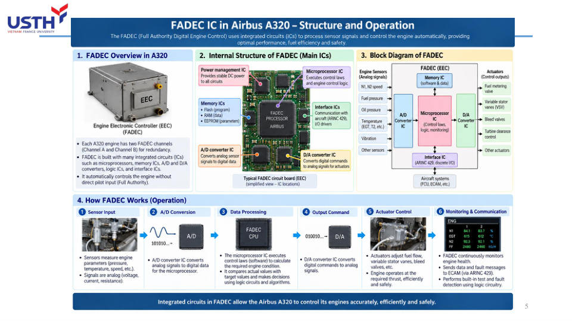
icmux·5 icmux·6
icmux·6 icmux·7
icmux·7 icmux·8
icmux·8
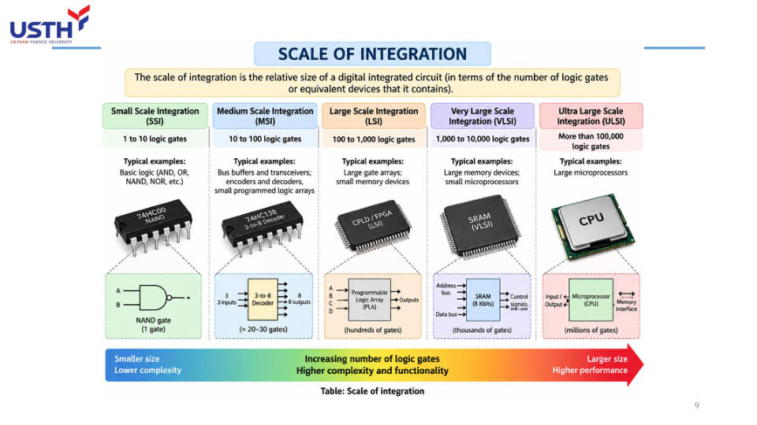
icmux·9 icmux·10
icmux·10 icmux·11
icmux·11 icmux·12
icmux·12 icmux·13
icmux·13 icmux·14
icmux·14 icmux·15
icmux·15 icmux·16
icmux·16 icmux·17
icmux·17
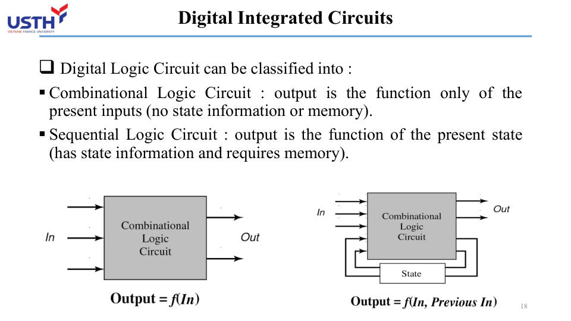
icmux·18 icmux·19
icmux·19 icmux·20
icmux·20 icmux·21
icmux·21
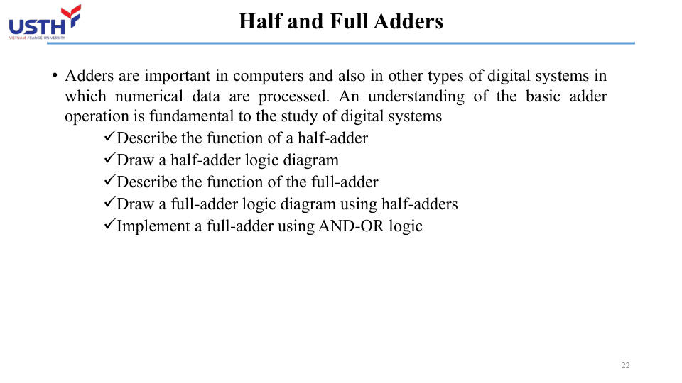
icmux·22 icmux·23
icmux·23 icmux·24
icmux·24
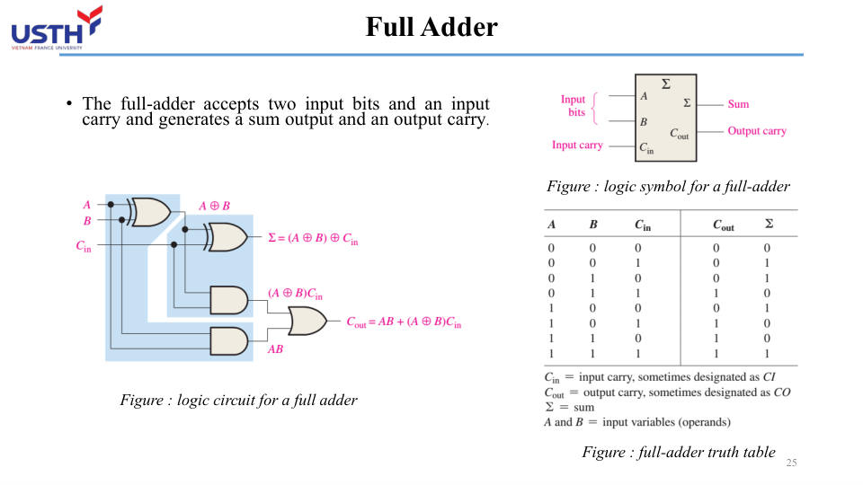
icmux·25
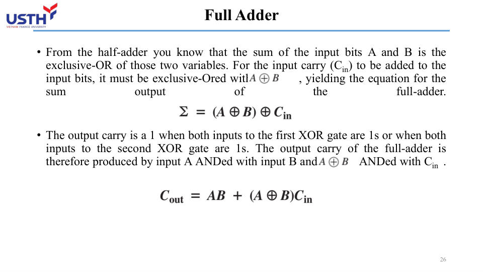
icmux·26 icmux·27
icmux·27 icmux·28
icmux·28 icmux·29
icmux·29 icmux·30
icmux·30 icmux·31
icmux·31 icmux·32
icmux·32 icmux·33
icmux·33 icmux·34
icmux·34 icmux·35
icmux·35 icmux·36
icmux·36 icmux·37
icmux·37
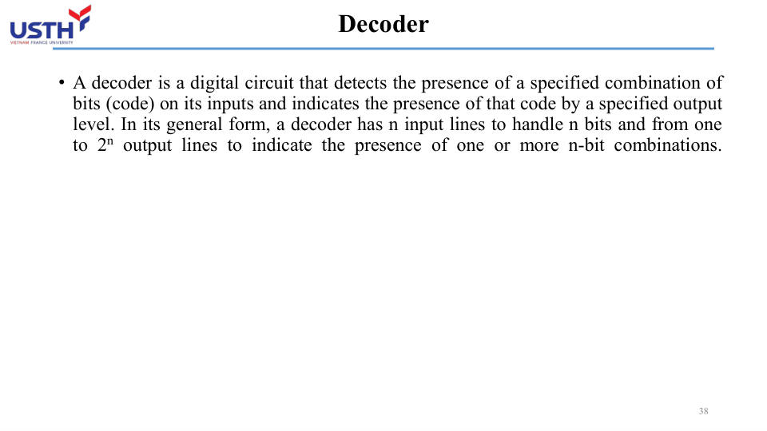
icmux·38 icmux·39
icmux·39
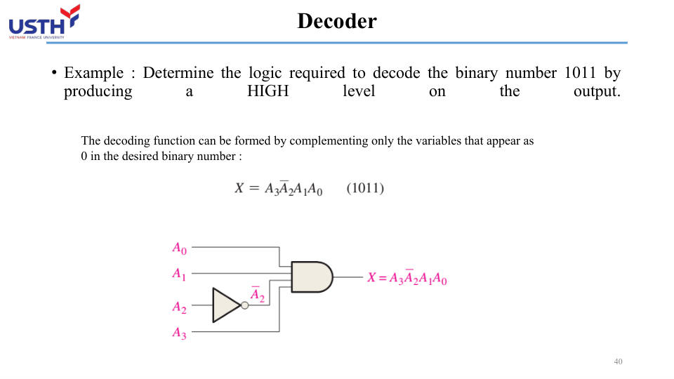
icmux·40 icmux·41
icmux·41 icmux·42
icmux·42 icmux·43
icmux·43 icmux·44
icmux·44 icmux·45
icmux·45 icmux·46
icmux·46 icmux·47
icmux·47 icmux·48
icmux·48 icmux·49
icmux·49 icmux·50
icmux·50 icmux·51
icmux·51 icmux·52
icmux·52
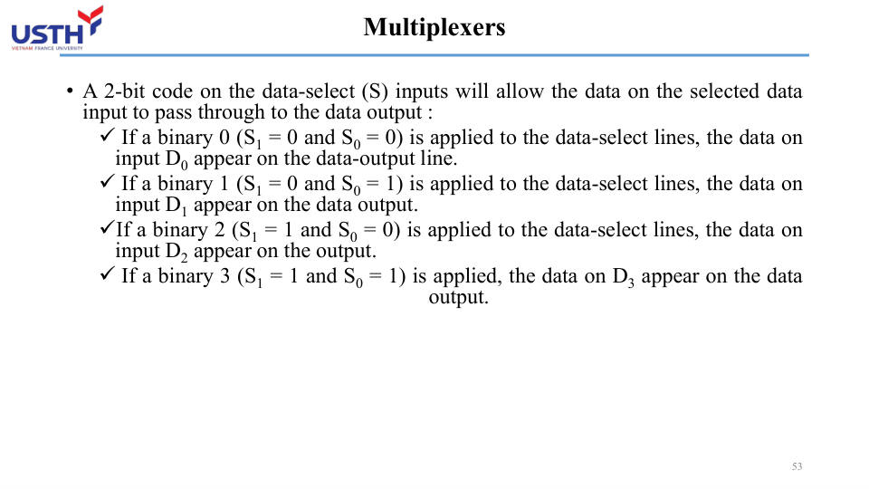
icmux·53 icmux·54
icmux·54 icmux·55
icmux·55 icmux·56
icmux·56 icmux·57
icmux·57 icmux·58
icmux·58 icmux·59
icmux·59 icmux·60
icmux·60Bài giảng
Quy mô tích hợp: từ SSI tới VLSI
- SSI (vài cổng) → MSI (vài chục-trăm cổng) → LSI → VLSI (triệu transistor)
- Công nghệ chế tạo và đóng gói IC (DIL, PLCC, QFP, SOIC…)
Bốn mức quy mô tích hợp
Quy mô tích hợp (scale of integration) đo bằng số cổng logic tương đương trên một chip:
| Mức | Số cổng logic | Ví dụ |
|---|---|---|
| SSI | 1-11 | Một cổng AND/OR/NAND đơn lẻ |
| MSI | 12-99 | Bộ giải mã, bộ dồn kênh, bus transceiver |
| LSI | 100-9.999 | Bộ nhớ nhỏ, mạch điều khiển |
| VLSI | ≥10.000 | Vi xử lý (hàng triệu transistor) |
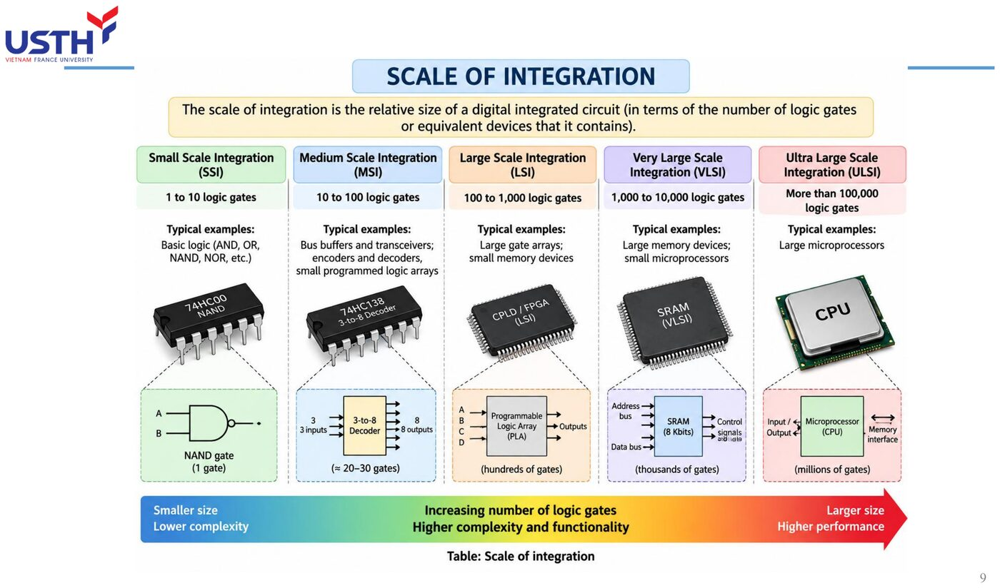
📖 Giải thích cho người mới bắt đầu
Hình đính kèm (trích từ bài giảng gốc) cho thấy trực quan cả 5 mức quy mô tích hợp trên cùng một trục: càng đi sang phải, số cổng logic tương đương càng tăng theo cấp số nhân, từ một cổng NAND đơn lẻ (SSI) cho tới cả một bộ vi xử lý (VLSI/ULSI) chứa hàng triệu cổng.
Điều quan trọng cần nắm: đây không phải một thang đo tuyến tính. Từ SSI (1 đến 11 cổng) lên MSI (12 đến 99 cổng) chỉ tăng khoảng 10 lần, nhưng từ LSI lên VLSI đã nhảy vọt hàng nghìn lần. Vì vậy khi nói “chip phức tạp hơn”, phải luôn hỏi rõ phức tạp hơn ở MỨC nào, không thể so sánh mơ hồ.
Công nghệ chế tạo: từ wafer tới die
Một IC bắt đầu từ một wafer silicon tròn, trên đó hàng trăm mạch giống hệt nhau được khắc đồng thời bằng công nghệ quang khắc (photolithography). Sau khi kiểm tra, wafer được cắt thành từng die riêng lẻ, rồi mỗi die được đóng gói (packaging) và nối chân ra ngoài.
📖 Giải thích cho người mới bắt đầu
Quy trình từ wafer tới die giống hệt việc nướng một chiếc bánh lớn rồi cắt thành nhiều miếng nhỏ giống hệt nhau: photolithography (quang khắc) “in” đồng thời hàng trăm mạch giống hệt nhau lên cùng một tấm wafer tròn, sau đó máy cắt wafer thành từng die riêng lẻ.
Lý do làm theo cách này thay vì chế tạo từng chip một: chi phí thiết lập quy trình khắc (mặt nạ quang khắc, máy móc) rất cao, nhưng một khi đã thiết lập xong, in thêm hàng trăm bản sao trên cùng một wafer gần như không tốn thêm chi phí đáng kể, giúp giảm mạnh giá thành mỗi chip khi sản xuất số lượng lớn.
Ví dụ phân loại 1: cổng logic chuẩn
Một cổng NAND 2 đầu vào đơn lẻ chỉ chứa vài transistor.
Vì số cổng < 12, đây là ví dụ điển hình của quy mô tích hợp nhỏ nhất.
📖 Giải thích cho người mới bắt đầu
Đây là ví dụ đơn giản nhất để bắt đầu làm quen với việc phân loại: chỉ cần đếm số cổng logic trong một linh kiện, rồi tra vào bảng 4 mức đã học ở slide đầu.
Một cổng NAND 2 đầu vào chỉ cần vài transistor để chế tạo (thường 4 transistor với công nghệ CMOS), và số cổng logic tương đương là 1, nằm rõ ràng trong khoảng 1 đến 11 của SSI, không cần bàn cãi gì thêm.
Ví dụ phân loại 2: IC bus transceiver 64 cổng
Một IC bus transceiver chứa 64 cổng logic và bộ đệm (Tooley Ch.8 Q9).
📖 Giải thích cho người mới bắt đầu
Với 64 cổng logic, con số này rơi đúng vào khoảng 12 đến 99 của MSI, không thuộc SSI (dưới 12) và cũng chưa đủ để lên LSI (từ 100 trở lên).
Đây là bài tập rèn kỹ năng tra bảng chính xác: chỉ cần nhớ đúng 3 ranh giới số (12, 100, 10.000) là có thể phân loại NGAY bất kỳ chip nào chỉ cần biết số cổng logic của nó, không cần nhớ thêm chi tiết gì khác.
Ví dụ phân loại 3: vi xử lý
Một vi xử lý hiện đại chứa từ vài triệu tới hàng tỉ transistor.
Đây là lý do vi xử lý luôn được xếp vào VLSI, dù chức năng logic bên trong vẫn dựa trên cùng nguyên lý cổng logic cơ bản đã học.
📖 Giải thích cho người mới bắt đầu
Vi xử lý là ví dụ cực đoan nhất của quy mô tích hợp: một CPU hiện đại có thể chứa từ vài triệu tới hàng chục tỉ transistor, vượt xa ngưỡng 10.000 cổng logic tương đương (mức thấp nhất để được xếp vào VLSI) tới hàng nghìn, thậm chí hàng triệu lần.
Điều thú vị cần ghi nhớ: dù số lượng cổng logic bên trong một CPU khổng lồ như vậy, MỖI cổng riêng lẻ vẫn hoạt động theo đúng nguyên lý AND/OR/NOT cơ bản đã học ở Module 02, không có “phép màu” nào khác: sự phức tạp chỉ đến từ số LƯỢNG cổng được kết nối với nhau, không phải từ một loại logic mới.
Ví dụ so sánh: DIP và PLCC
Cùng một mạch MSI có thể đóng gói theo DIP (Dual-In-line Package, 2 hàng chân song song) hoặc PLCC (Plastic Leaded Chip Carrier, chân bố trí quanh 4 cạnh).
PLCC cho phép nhiều chân hơn trên cùng diện tích đế: hữu ích khi mạch cần nhiều tín hiệu vào/ra nhưng không gian board hạn chế (Tooley Ch.8 Q5).
📖 Giải thích cho người mới bắt đầu
DIP và PLCC là hai cách “đóng gói” hoàn toàn khác nhau cho cùng một mạch bên trong: DIP xếp chân theo 2 hàng song song (giống một con rết có chân hai bên), còn PLCC xếp chân đều quanh cả 4 cạnh của gói vuông.
Lý do PLCC tồn tại: khi một mạch cần rất nhiều chân vào/ra (ví dụ 44, 68 chân) nhưng diện tích board mạch lại hạn chế, xếp chân quanh 4 cạnh cho phép nhồi nhiều chân hơn trong cùng một diện tích so với chỉ xếp ở 2 cạnh như DIP, giống như một căn phòng có cửa sổ ở cả 4 bức tường sẽ đón nhiều ánh sáng hơn phòng chỉ có cửa sổ ở 2 bức tường đối diện.
Bảng so sánh các kiểu đóng gói IC
| Kiểu đóng gói | Đặc điểm | Lắp đặt |
|---|---|---|
| DIL/DIP | 2 hàng chân song song | Xuyên lỗ hoặc đế cắm |
| PGA | Chân dạng lưới (pin grid array) | Đế cắm (socket) |
| PLCC | Chân quanh 4 cạnh, gọn hơn DIP | Đế cắm hoặc hàn |
| SOIC | Dán bề mặt, nhỏ gọn | Luôn hàn cố định |
| QFP | Chân mật độ cao quanh 4 cạnh | Hàn bề mặt |
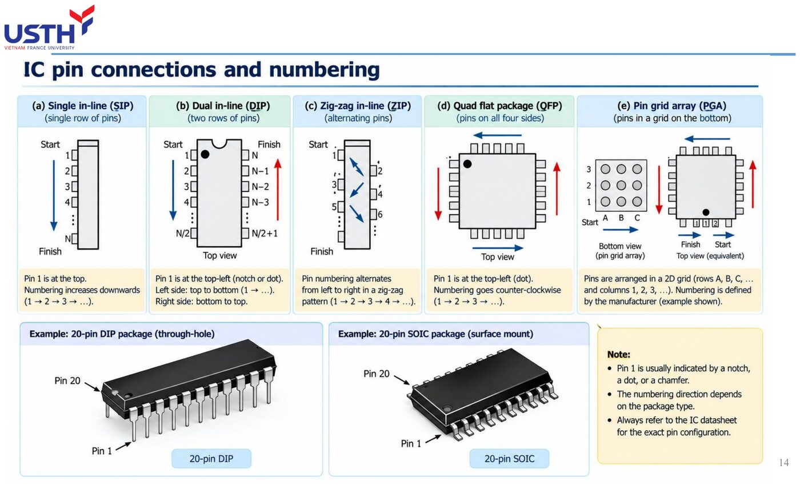
📖 Giải thích cho người mới bắt đầu
Bảng này liệt kê 5 kiểu đóng gói phổ biến, mỗi kiểu có một đặc điểm hình dạng và cách lắp đặt riêng. Điều quan trọng không phải là học thuộc từng chi tiết, mà là nhận ra XU HƯỚNG chung: các kiểu đóng gói hiện đại (SOIC, QFP) đều hướng tới việc hàn cố định trực tiếp lên board (surface-mount), thay vì cắm vào đế (socket) như DIP/PGA truyền thống.
Xu hướng này phản ánh đúng nhu cầu thu nhỏ kích thước và tăng độ tin cậy của thiết bị điện tử hiện đại, điều sẽ được giải thích rõ hơn ở slide tiếp theo về ứng dụng hàng không.
Ứng dụng hàng không: chọn đóng gói chịu rung động
Thiết bị avionics phải hoạt động ổn định trong môi trường rung động mạnh và thay đổi nhiệt độ lớn. Đóng gói kiểu DIP/PGA có đế cắm (socket) tiềm ẩn rủi ro tiếp xúc lỏng do rung động theo thời gian, nên nhiều LRU hàng không ưu tiên linh kiện hàn cố định (SOIC, QFP) hoặc đế cắm có khoá cơ khí chống rung, kết hợp keo/verni bảo vệ mối hàn.
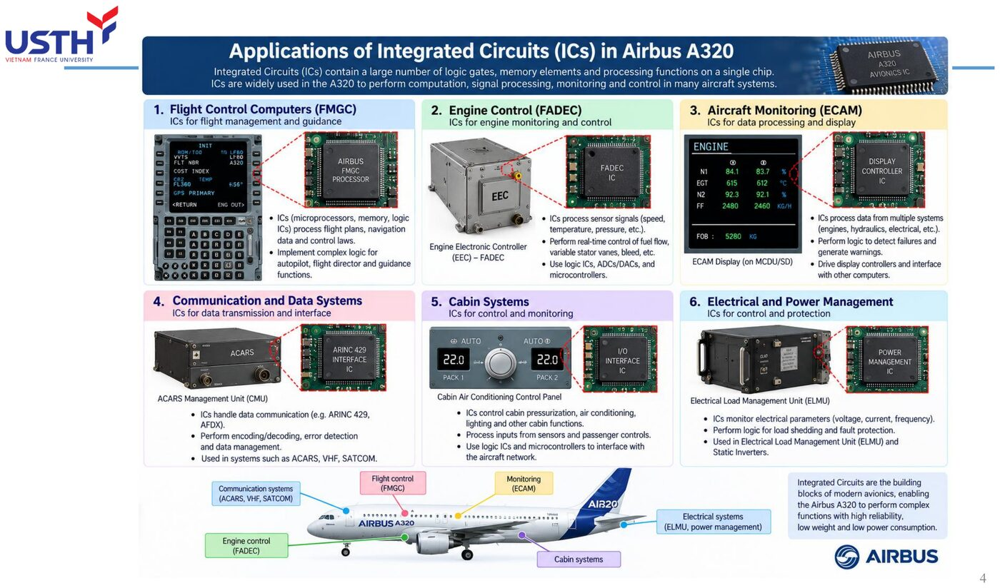
📖 Giải thích cho người mới bắt đầu
Rung động là kẻ thù của mọi mối nối điện không chắc chắn: một chip cắm vào đế (socket) có thể, theo thời gian, bị rung lỏng dần ra khỏi vị trí tiếp xúc, gây ra hiện tượng chập chờn cực kỳ khó chẩn đoán (đôi khi hoạt động, đôi khi không, tuỳ vào việc rung động vừa làm chân tiếp xúc lại hay chưa).
Đó là lý do thiết bị avionics thường ưu tiên hàn cố định (SOIC, QFP) thay vì dùng đế cắm: mối hàn không thể “lỏng dần” theo thời gian như tiếp xúc cơ khí của đế cắm. Khi vẫn cần dùng đế cắm (để dễ thay thế linh kiện), người ta bổ sung khoá cơ khí chống rung và phủ keo/verni bảo vệ để giảm rủi ro.
⚠️ Cảnh báo: đừng suy luận quy mô tích hợp chỉ từ 'tuổi đời' của chip
Một chip sản xuất năm 1981 nhiều khả năng là DIP/SSI-MSI, nhưng đây chỉ là suy luận theo công nghệ phổ biến thời kỳ đó, không phải quy luật tuyệt đối. Quy mô tích hợp được xác định bằng SỐ CỔNG LOGIC THỰC TẾ trên chip, không phải năm sản xuất.
📖 Giải thích cho người mới bắt đầu
Đây là một cảnh báo quan trọng về TƯ DUY suy luận: rất dễ bị cám dỗ để nghĩ “chip cũ chắc chắn là SSI/MSI vì công nghệ hồi đó còn đơn giản”, nhưng đây chỉ là một quy luật THỐNG KÊ (đúng phần lớn trường hợp thời đó), không phải một ĐỊNH NGHĨA.
Định nghĩa CHÍNH XÁC của quy mô tích hợp chỉ dựa vào một tiêu chí duy nhất: đếm số cổng logic tương đương thực tế có trên chip. Một chip sản xuất năm 1981 vẫn có thể là VLSI nếu nó thực sự chứa trên 10.000 cổng (dù hiếm ở thời kỳ đó), và ngược lại một chip sản xuất gần đây vẫn có thể chỉ là SSI nếu chức năng của nó đơn giản (ví dụ một cổng logic rời).
Tự kiểm tra nhanh
Trước khi sang phần tiếp theo, hãy tự trả lời: một IC chứa khoảng 200 cổng logic thuộc quy mô tích hợp nào? Nó có khả năng được đóng gói theo kiểu nào nếu sản xuất sau năm 2000?
📖 Giải thích cho người mới bắt đầu
Bài tự kiểm tra áp dụng lại đúng bảng phân loại: 200 cổng logic nằm ngoài khoảng 12 đến 99 của MSI (vượt quá 99), nên phải xếp vào LSI (100 đến 9.999).
Về đóng gói, nếu sản xuất sau năm 2000, khả năng cao chip này sẽ dùng kiểu hàn bề mặt hiện đại (SOIC hoặc QFP) thay vì DIP/PGA cắm đế truyền thống, đúng xu hướng công nghệ đã học ở các slide trước, dù đây chỉ là suy luận theo xu hướng phổ biến, không phải quy luật tuyệt đối (như đã cảnh báo ở slide trước).
Fan-in và fan-out
- Định nghĩa và giới hạn tải của một cổng logic
- Vì sao vượt fan-out gây lỗi mức logic
Định nghĩa fan-out
Fan-out là số đầu vào chuẩn (cùng họ logic) tối đa mà một đầu ra có thể điều khiển an toàn mà không làm mức logic bị lệch khỏi giới hạn cho phép.
📖 Giải thích cho người mới bắt đầu
Hãy tưởng tượng fan-out như “sức kéo” tối đa của một chiếc xe: nếu xe được thiết kế để kéo tối đa 10 toa hàng cùng loại, gắn thêm toa thứ 11 sẽ khiến xe không đủ sức, dẫn tới vận hành ì ạch hoặc hỏng hóc. Tương tự, một cổng logic có fan-out=10 chỉ đủ “sức” (dòng điện) để giữ đúng mức điện áp logic cho tối đa 10 đầu vào cùng họ ở tầng sau.
Điểm mấu chốt: fan-out là thuộc tính của ĐẦU RA (bên phát tín hiệu), mô tả khả năng “gánh” bao nhiêu tải, khác hẳn với fan-in ở slide sau, vốn là thuộc tính của ĐẦU VÀO.
Định nghĩa fan-in
Fan-in là tải tương đương (tính theo số đầu vào chuẩn cùng họ logic) mà MỘT đầu vào cụ thể áp lên tầng trước nó.
- Đầu vào chuẩnfan-in = 1
- Đầu vào nối 2 cổng cùng lúcfan-in = 2
📖 Giải thích cho người mới bắt đầu
Nếu fan-out là “sức kéo” của xe, thì fan-in giống như “trọng lượng” của mỗi toa hàng: một đầu vào bình thường chỉ nặng bằng đúng 1 đơn vị tải chuẩn, nhưng nếu một đường tín hiệu bị nối vào NHIỀU cổng cùng lúc (như đường B trong ví dụ), nó sẽ tạo ra tải nặng hơn tương ứng với số cổng đó.
Đây là lý do khi tính toán tải thực tế của một mạch, không thể chỉ đếm số “đường dây” mà phải đếm số “đầu vào cổng logic” thực sự được nối vào, vì một đường dây có thể rẽ nhánh tới nhiều cổng khác nhau.
Ví dụ: tính fan-in của một mạch
Cho mạch có đầu vào B nối đồng thời tới cổng G3 và G4 (mỗi cổng là thiết bị chuẩn, fan-in mỗi đầu vào = 1). Vậy tải mà B áp lên tầng trước = 1 (từ G3) + 1 (từ G4) = 2.
📖 Giải thích cho người mới bắt đầu
Bài tập này minh hoạ chính xác điểm đã nêu ở slide trước: dù chỉ có MỘT đường tín hiệu B duy nhất, nó rẽ nhánh vào HAI cổng khác nhau (G3 và G4), nên tải thực tế mà B phải “gánh” không phải là 1, mà là tổng của từng nhánh: 1 (từ G3) cộng 1 (từ G4) bằng 2.
Cách tính đơn giản nhưng dễ bị bỏ sót nếu chỉ nhìn thoáng qua sơ đồ mạch và đếm “một đường thì tải bằng 1”: luôn phải lần theo TỪNG nhánh rẽ của một đường tín hiệu để đếm đủ tải.
Ví dụ: tính fan-out tối thiểu của một cổng
Cổng G1 phải điều khiển 6 cổng phía sau (G2 đến G7), mỗi cổng là thiết bị chuẩn (fan-in=1 mỗi cổng). Vậy G1 cần fan-out tối thiểu là:
📖 Giải thích cho người mới bắt đầu
Bài toán ngược lại với slide trước: thay vì tính tải áp lên MỘT đầu vào, giờ ta tính fan-out TỐI THIỂU cần có ở đầu ra của G1 để nó đủ sức nuôi toàn bộ 6 cổng phía sau.
Phép tính rất trực quan: nếu mỗi cổng tải (G2 đến G7) chỉ có fan-in tiêu chuẩn bằng 1, tổng tải cần “gánh” đơn giản là phép cộng 6 lần con số 1, ra 6. Nếu một trong các cổng tải đó lại có fan-in lớn hơn 1 (ví dụ một cổng đặc biệt cần tải gấp đôi), fan-out tối thiểu cần thiết sẽ tăng tương ứng.
Điều gì xảy ra nếu vượt quá fan-out?
Khi số tải vượt fan-out cho phép, cổng nguồn không đủ dòng để giữ mức logic 'cao' (không đủ nguồn dòng ra) hoặc mức 'thấp' (không đủ khả năng hút dòng vào), khiến điện áp thực tế trôi khỏi ngưỡng logic hợp lệ: mạch hoạt động sai hoặc không ổn định.
📖 Giải thích cho người mới bắt đầu
Đây là hậu quả VẬT LÝ thực sự, không chỉ là một con số lý thuyết bị vi phạm: khi một cổng phải nuôi nhiều tải hơn khả năng thiết kế, nó không đủ dòng điện để “đẩy” điện áp lên đủ cao (mức logic 1) hoặc không đủ khả năng “hút” dòng điện xuống đủ thấp (mức logic 0).
Kết quả thực tế: điện áp đo được tại các tải sẽ trôi vào vùng “không xác định” (nằm giữa ngưỡng logic 0 và logic 1 hợp lệ), khiến các tầng sau đọc tín hiệu SAI một cách không nhất quán, có lúc đúng có lúc sai tuỳ điều kiện nhiệt độ/điện áp nguồn, cực kỳ khó chẩn đoán bằng mắt thường.
Ví dụ số: dùng bộ đệm (buffer) khi vượt fan-out
Một cổng TTL chuẩn (fan-out=10) cần điều khiển 25 đầu vào TTL. Vì 25 > 10, cần chèn thêm bộ đệm (buffer/driver) có fan-out cao hơn (vd 30) giữa cổng nguồn và các tải, thay vì nối trực tiếp.
📖 Giải thích cho người mới bắt đầu
Giải pháp “chèn bộ đệm” (buffer) khi vượt fan-out giống hệt việc dùng loa trợ âm khi một người nói không đủ to cho cả một hội trường lớn nghe: bộ đệm không “tạo ra” tín hiệu mới, nó chỉ khuếch đại đủ dòng điện để tín hiệu gốc có thể nuôi được nhiều tải hơn.
Với 25 tải cần điều khiển nhưng cổng gốc chỉ có fan-out 10, phải chèn một bộ đệm có fan-out đủ lớn (ví dụ 30) vào giữa, để bộ đệm mới là bên thực sự “gánh” toàn bộ 25 tải, còn cổng gốc chỉ cần nuôi đúng 1 tải là bộ đệm đó.
Bảng fan-out danh định theo họ logic
| Họ logic | Fan-out danh định (cùng họ) |
|---|---|
| TTL chuẩn | 10 |
| TTL Schottky công suất thấp (LS) | 20 |
| CMOS chuẩn | ~50 (do trở kháng vào rất cao) |
📖 Giải thích cho người mới bắt đầu
Bảng này cho thấy một điểm rất thú vị: CMOS có fan-out danh định cao hơn hẳn TTL (khoảng 50 so với 10), nhưng lý do hoàn toàn khác với lý do TTL bị giới hạn.
TTL giới hạn fan-out vì DÒNG ĐIỆN mỗi tải rút ra khá lớn. CMOS có trở kháng đầu vào cực cao (gần như không rút dòng ở trạng thái tĩnh), nên về lý thuyết có thể nuôi rất nhiều tải mà không gặp vấn đề dòng điện: con số fan-out của CMOS thường bị giới hạn bởi yếu tố khác (tốc độ, như sẽ học ở Phần 5) chứ không phải dòng điện như TTL.
Ứng dụng hàng không: phân phối tín hiệu clock
Trong máy tính buồng lái, một xung clock từ dao động thạch anh trung tâm thường cần cấp cho nhiều mạch con (bộ đếm thời gian, bộ mã hoá dữ liệu, bộ hiển thị). Kỹ sư thiết kế phải tính tổng fan-in của toàn bộ mạch nhận clock để chọn đúng bộ đệm phân phối clock (clock buffer/driver) đủ fan-out, tránh suy hao tín hiệu định thời quan trọng.
📖 Giải thích cho người mới bắt đầu
Ứng dụng phân phối xung clock cho thấy fan-out không chỉ là lý thuyết sách vở: một xung clock trung tâm thường phải “nuôi” rất nhiều mạch con khác nhau trong cùng hệ thống buồng lái (bộ đếm, bộ mã hoá, bộ hiển thị), mỗi mạch con lại có fan-in riêng.
Kỹ sư phải CỘNG DỒN tổng fan-in của TOÀN BỘ mạch nhận clock (tương tự bài tập fan-in đã học), rồi chọn đúng bộ đệm phân phối clock (clock driver) có fan-out đủ lớn hơn tổng đó. Nếu tính thiếu, xung clock bị suy hao có thể khiến các mạch con nhận thời điểm đồng bộ SAI LỆCH, gây lỗi nghiêm trọng trong hệ thống thời gian thực.
⚠️ Cảnh báo: fan-out không cộng dồn qua nhiều họ logic khác nhau
Fan-out danh định (vd 10 của TTL) chỉ đúng khi tải là đầu vào CÙNG HỌ logic. Khi trộn TTL với CMOS, phải quy đổi tải theo bảng tương thích giữa 2 họ (input loading khác nhau), không được cộng trực tiếp số lượng đầu vào như cùng họ.
📖 Giải thích cho người mới bắt đầu
Đây là một cạm bẫy rất thực tế: con số fan-out=10 của TTL chỉ đúng khi TẤT CẢ tải đều là đầu vào TTL, vì con số này được tính dựa trên đặc tính dòng điện riêng của họ TTL.
Khi trộn TTL với CMOS, không thể áp dụng công thức cộng đơn giản như cùng họ, vì CMOS có đặc tính dòng điện đầu vào hoàn toàn khác (gần như không rút dòng). Phải tra bảng “input loading” chính thức của nhà sản xuất để biết chính xác một đầu vào CMOS tương đương bao nhiêu “đơn vị tải TTL chuẩn”, rồi mới cộng dồn đúng cách.
Tự kiểm tra nhanh
Một cổng CMOS có fan-out 50 cần điều khiển 12 đầu vào CMOS chuẩn: có an toàn không? Nếu 3 trong số đó là đầu vào TTL (không phải CMOS), bạn cần kiểm tra thêm điều gì trước khi kết luận?
📖 Giải thích cho người mới bắt đầu
Với 12 đầu vào CMOS chuẩn và fan-out 50, phép tính rất đơn giản: 12 nhỏ hơn nhiều so với 50, nên hoàn toàn an toàn nếu TẤT CẢ tải đều là CMOS.
Nhưng câu hỏi phụ (3 trong số đó là TTL) chính là cái bẫy: một khi trộn lẫn họ logic, không thể áp dụng trực tiếp con số fan-out=50 (vốn tính riêng cho tải CMOS) cho cả 3 tải TTL kia. Phải tra bảng quy đổi tải giữa hai họ (như cảnh báo ở slide trước) trước khi kết luận có an toàn hay không, không được giả định đơn giản là “12 nhỏ hơn 50 nên chắc chắn ổn”.
Bộ giải mã và bộ mã hoá (decoder/encoder)
- Giải mã địa chỉ bộ nhớ, mã hoá bàn phím
- Chân enable để ghép tầng (cascading)
Định nghĩa bộ giải mã (decoder)
Bộ giải mã nhận n đường địa chỉ nhị phân và kích hoạt ĐÚNG MỘT trong 2ⁿ đường ra tương ứng với tổ hợp địa chỉ đó: dùng để chọn 1 thiết bị/vị trí nhớ trong nhiều lựa chọn.
📖 Giải thích cho người mới bắt đầu
Hãy hình dung bộ giải mã như một nhân viên tổng đài chuyển tiếp cuộc gọi: khách gọi tới cung cấp một “số máy lẻ” (địa chỉ nhị phân n bit), và nhân viên chỉ nối đúng MỘT đường dây duy nhất (trong 2ⁿ đường có thể) tương ứng với số máy lẻ đó, mọi đường khác đều để im.
Công thức 2ⁿ chính là số lượng “đường dây” tối đa có thể phân biệt được bằng n bit địa chỉ, đúng nguyên lý đã học ở Module 01 khi đếm số tổ hợp nhị phân. Với n=2 bit địa chỉ, có đúng 2²=4 đường ra có thể, khớp với ví dụ decoder 2-sang-4 ở slide sau.
Định nghĩa bộ mã hoá (encoder)
Bộ mã hoá thực hiện chức năng NGƯỢC LẠI: nhận tín hiệu tích cực trên 1 trong N đường vào, xuất ra mã nhị phân tương ứng trên log₂(N) đường ra.
📖 Giải thích cho người mới bắt đầu
Bộ mã hoá làm công việc NGƯỢC LẠI hoàn toàn với bộ giải mã: thay vì nhận địa chỉ để chọn 1 đường, nó nhận tín hiệu tích cực trên MỘT trong N đường vào, rồi “báo cáo lại” đúng địa chỉ nhị phân của đường đó bằng log₂(N) bit đầu ra.
Đây là quan hệ đối xứng rất đẹp trong thiết kế số: encoder và decoder là hai mặt của cùng một đồng xu, một cái đi từ địa chỉ ra tín hiệu chọn, cái kia đi từ tín hiệu chọn ngược lại ra địa chỉ, và công thức 2ⁿ↔log₂(N) áp dụng cho cả hai chiều.
Ví dụ: thiết kế bảng chân trị decoder 2-sang-4
| A1 | A0 | Y0 | Y1 | Y2 | Y3 |
|---|---|---|---|---|---|
| 0 | 0 | 1 | 0 | 0 | 0 |
| 0 | 1 | 0 | 1 | 0 | 0 |
| 1 | 0 | 0 | 0 | 1 | 0 |
| 1 | 1 | 0 | 0 | 0 | 1 |
Ở mỗi hàng, đúng một ngõ ra bằng 1, có chỉ số bằng giá trị nhị phân của A1A0.
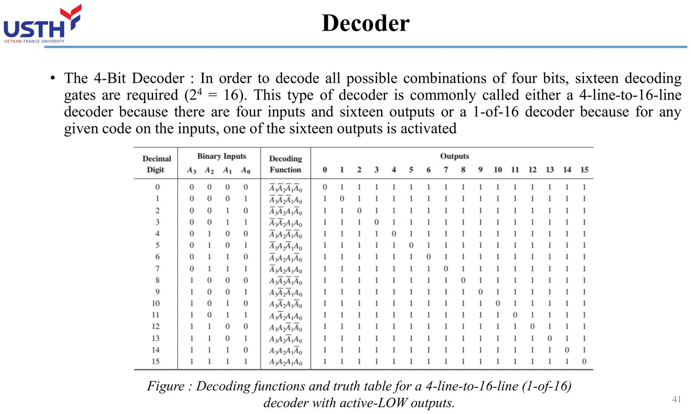
📖 Giải thích cho người mới bắt đầu
Bảng chân trị này thể hiện đúng nguyên lý “một địa chỉ, một đường ra tích cực” đã nêu ở slide đầu: với địa chỉ A1A0=00 (tức số 0 ở hệ nhị phân), chỉ có Y0 bật lên 1, ba đường Y1/Y2/Y3 còn lại đều là 0.
Điều đáng chú ý: chỉ số của đường ra tích cực LUÔN khớp đúng với giá trị nhị phân của địa chỉ đầu vào (địa chỉ 00→Y0, địa chỉ 01→Y1, địa chỉ 10→Y2, địa chỉ 11→Y3). Đây không phải sự trùng hợp, mà là chính định nghĩa của bộ giải mã nhị phân chuẩn.
Ví dụ: bộ mã hoá ưu tiên 4-sang-2
Nếu nhiều đầu vào cùng tích cực, bộ mã hoá ƯU TIÊN chọn đầu vào có chỉ số CAO NHẤT để mã hoá. Vd đầu vào I1 và I3 cùng tích cực → mã hoá theo I3 (ưu tiên cao hơn) → ngõ ra = 11 (nhị phân của 3), bỏ qua I1.

📖 Giải thích cho người mới bắt đầu
Bộ mã hoá ưu tiên giải quyết một tình huống thực tế mà bộ mã hoá thường (không ưu tiên) không xử lý được: nếu HAI đầu vào cùng tích cực một lúc, bộ mã hoá thường sẽ cho ra kết quả sai hoặc không xác định, vì nó không được thiết kế để “chọn” giữa hai tín hiệu.
Bộ mã hoá ưu tiên giải quyết bằng một quy tắc đơn giản: LUÔN chọn đầu vào có chỉ số cao nhất trong số các đầu vào đang tích cực, bỏ qua hoàn toàn các đầu vào có chỉ số thấp hơn. Với I1 và I3 cùng tích cực, hệ thống hoàn toàn phớt lờ I1 và chỉ mã hoá theo I3, giống hệt quy tắc phân xử ưu tiên trong hàng đợi khẩn cấp: người có mức ưu tiên cao nhất luôn được xử lý trước.
Ví dụ: chuyển đổi mã BCD sang 7 đoạn
Bộ chuyển đổi mã (code converter) BCD-sang-7-đoạn nhận 4 bit BCD (0000-1001) và xuất ra 7 tín hiệu điều khiển từng đoạn (a-g) của LED 7 đoạn để hiển thị đúng chữ số thập phân tương ứng: nguyên lý dùng trong hiển thị số trên nhiều thiết bị đo lường buồng lái.
📖 Giải thích cho người mới bắt đầu
Bộ chuyển đổi mã BCD-sang-7-đoạn là một ví dụ đặc biệt của “bộ giải mã”: thay vì có ĐÚNG MỘT đường ra tích cực như decoder thông thường, nó có 7 đường ra (a đến g), và với mỗi mã BCD đầu vào, một TỔ HỢP các đường ra cụ thể được bật lên để tạo hình đúng chữ số cần hiển thị.
Ví dụ, để hiển thị chữ số “0”, cần bật các đoạn a,b,c,d,e,f (tất cả trừ đoạn g ở giữa); để hiển thị “1”, chỉ cần bật đúng 2 đoạn b,c (hai đoạn bên phải). Mỗi chữ số 0-9 có một “khuôn mẫu” bật/tắt 7 đoạn riêng, được mạch giải mã tính sẵn theo đúng mã BCD nhận vào.
Ví dụ: chân enable dùng để ghép tầng
Một IC decoder 3-sang-8 có thêm 1 chân Enable. Khi Enable=0, TOÀN BỘ ngõ ra bị khoá về mức không tích cực bất kể địa chỉ vào là gì. Ghép 2 IC decoder 3-sang-8 qua chân Enable cho phép mở rộng thành 1 decoder 4-sang-16 (dùng bit địa chỉ thứ 4 để chọn IC nào được Enable).
📖 Giải thích cho người mới bắt đầu
Chân Enable biến một IC decoder đơn lẻ thành một “khối xây dựng” (building block) có thể ghép lại thành hệ thống lớn hơn: khi Enable=0, TOÀN BỘ ngõ ra bị khoá về mức không tích cực, bất kể địa chỉ đưa vào là gì, giống như tắt hẳn nguồn điện của cả khối decoder đó.
Kỹ thuật ghép tầng: dùng bit địa chỉ thứ 4 (bit cao nhất) để quyết định BẬT Enable của IC decoder nào trong 2 IC (mỗi IC xử lý 8 địa chỉ với 3 bit thấp), còn 3 bit thấp dùng chung cho cả hai IC để chọn đúng đường ra trong 8 đường của IC đang được Enable. Kết quả: 2 IC 3-sang-8 ghép lại thành đúng 1 hệ thống 4-sang-16, không cần thiết kế IC mới từ đầu.
Bảng so sánh 4 mạch MSI cơ bản
| Mạch | Chiều xử lý | Ứng dụng chính |
|---|---|---|
| Decoder | n vào → 2ⁿ ra (đúng 1 ra tích cực) | Giải mã địa chỉ bộ nhớ |
| Encoder | N vào → log₂N ra | Mã hoá bàn phím |
| Multiplexer | N kênh dữ liệu → 1 ra | Chọn 1 trong nhiều nguồn tín hiệu |
| Demultiplexer | 1 vào → N kênh ra | Phân phối tín hiệu tới nhiều đích |
📖 Giải thích cho người mới bắt đầu
Bảng này tổng hợp lại 4 mạch MSI theo đúng một tiêu chí duy nhất: hướng xử lý dữ liệu đi như thế nào. Decoder và encoder đối xứng nhau (n↔2ⁿ theo hai chiều ngược nhau), còn multiplexer và demultiplexer cũng đối xứng nhau (N kênh↔1 kênh theo hai chiều ngược nhau).
Ghi nhớ theo cặp đối xứng này (decoder-encoder, mux-demux) dễ hơn nhiều so với học thuộc 4 định nghĩa rời rạc: mỗi cặp chỉ là “đảo chiều” của nhau, và một khi hiểu rõ MỘT mạch trong cặp, mạch còn lại chỉ cần đảo ngược tư duy là hiểu được ngay.
Ứng dụng hàng không: giải mã địa chỉ bộ nhớ trong máy tính buồng lái
Trong máy tính buồng lái (Tooley Figure 6.11), CPU cần chọn đúng vùng ROM/RAM để đọc/ghi. Một mạch giải mã địa chỉ (address decoder) nhận các bit cao của address bus và kích hoạt đúng chân Chip-Select (CS) của ROM hoặc RAM tương ứng, tránh 2 thiết bị nhớ cùng tranh chấp bus dữ liệu.

📖 Giải thích cho người mới bắt đầu
Địa chỉ bộ nhớ trong máy tính buồng lái hoạt động đúng theo nguyên lý decoder đã học: CPU đưa ra một địa chỉ nhị phân trên address bus, và mạch giải mã địa chỉ có nhiệm vụ “phiên dịch” địa chỉ đó thành TÍN HIỆU CHỌN đúng một chip nhớ (ROM hoặc RAM) cụ thể thông qua chân Chip-Select (CS) của chip đó.
Vai trò an toàn cực kỳ quan trọng của mạch này: nếu 2 chip nhớ CÙNG LÚC được kích hoạt CS (do mạch giải mã lỗi hoặc thiết kế sai), cả hai sẽ cùng lúc cố gắng đưa dữ liệu ra chung một đường data bus, gây xung đột điện y hệt vấn đề “bus contention” đã học ở Module 02 khi nói về tri-state.
⚠️ Cảnh báo: đừng nhầm decoder 'không có input dữ liệu' với demultiplexer
Về mặt vật lý, decoder và demultiplexer có thể dùng CHUNG một IC (gán thêm 1 chân làm 'dữ liệu' thay vì luôn giữ mức tích cực cố định). Nhưng về MỤC ĐÍCH chức năng: decoder dùng để CHỌN đường theo địa chỉ, demux dùng để PHÂN PHỐI 1 luồng dữ liệu tới nhiều đích: đừng đánh đồng 2 khái niệm chỉ vì cùng linh kiện vật lý.
📖 Giải thích cho người mới bắt đầu
Đây là điểm rất tinh tế dễ gây nhầm lẫn: về mặt VẬT LÝ, một IC decoder và một IC demultiplexer có thể là CÙNG một con chip, chỉ khác cách người thiết kế “gán vai trò” cho các chân của nó (một chân luôn giữ mức cố định để làm “dữ liệu” giả, biến decoder thành demux).
Nhưng về mặt MỤC ĐÍCH sử dụng, hai khái niệm này hoàn toàn khác nhau: decoder dùng để CHỌN một đường dựa theo địa chỉ (mục đích chọn lựa), còn demultiplexer dùng để PHÂN PHỐI một luồng dữ liệu thực sự tới nhiều đích khác nhau (mục đích truyền dữ liệu). Đừng đánh đồng hai khái niệm chỉ vì chúng có thể dùng chung một linh kiện vật lý.
Tự kiểm tra nhanh
Một bộ mã hoá ưu tiên 8-sang-3 nhận tín hiệu tích cực đồng thời ở đầu vào 2, 4 và 6. Ngõ ra mã hoá sẽ ứng với đầu vào nào? Vì sao?
📖 Giải thích cho người mới bắt đầu
Bài tự luyện áp dụng đúng quy tắc “chọn chỉ số cao nhất” của bộ mã hoá ưu tiên đã học: với ba đầu vào 2, 4, 6 cùng tích cực đồng thời, bộ mã hoá ưu tiên sẽ hoàn toàn bỏ qua đầu vào 2 và 4, chỉ mã hoá theo đầu vào có chỉ số CAO NHẤT trong ba số đó, tức đầu vào 6.
Lý do bộ mã hoá ưu tiên làm vậy: trong nhiều ứng dụng thực tế (ví dụ xử lý ngắt trong CPU), tín hiệu có chỉ số cao thường đại diện cho sự kiện quan trọng/khẩn cấp hơn, nên quy tắc “luôn ưu tiên chỉ số cao nhất” đảm bảo sự kiện quan trọng nhất luôn được xử lý trước, bất kể có bao nhiêu sự kiện khác đang chờ đồng thời.
Bộ dồn kênh (multiplexer/data selector)
- Nguyên lý: n đường chọn cho 2ⁿ kênh vào
- Ứng dụng: bộ chọn dữ liệu độ cao 4 kênh trên hệ thống altimeter
Định nghĩa multiplexer
Multiplexer (bộ dồn kênh/data selector) chọn 1 trong N kênh dữ liệu đầu vào để đưa ra 1 ngõ ra duy nhất, dựa theo tổ hợp nhị phân trên các đường chọn (select lines).
📖 Giải thích cho người mới bắt đầu
Hãy hình dung multiplexer như một nhân viên gác cổng một sân bay nhỏ với N đường băng nhưng chỉ có MỘT đường lăn ra khỏi sân bay: tại một thời điểm, nhân viên chỉ cho phép ĐÚNG MỘT máy bay từ một đường băng cụ thể (do “phiếu chọn” quyết định) đi ra đường lăn chung, các máy bay ở đường băng khác phải chờ.
Công thức n=log₂(N) cho biết cần bao nhiêu bit trên “phiếu chọn” (đường chọn/select lines) để phân biệt đủ N đường băng khác nhau: đây chính là công thức ngược của 2ⁿ đã học ở decoder, vì bản chất việc “chọn 1 trong N kênh” cũng là một dạng giải mã địa chỉ.
Ví dụ: bảng chân trị mux 4-sang-1
| S1 | S0 | Ngõ ra Y |
|---|---|---|
| 0 | 0 | D0 |
| 0 | 1 | D1 |
| 1 | 0 | D2 |
| 1 | 1 | D3 |
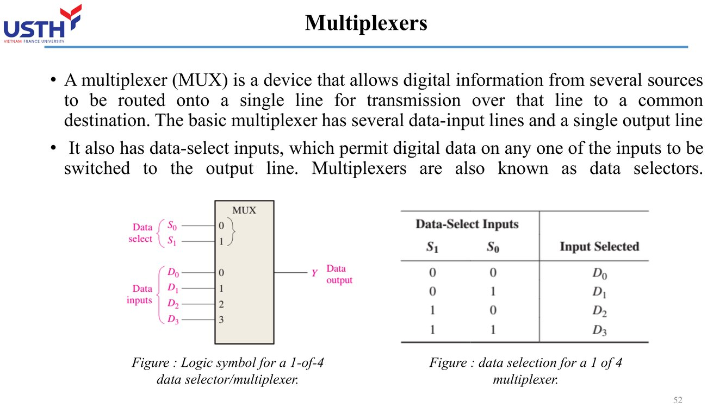
📖 Giải thích cho người mới bắt đầu
Bảng chân trị mux 4-sang-1 đọc rất trực quan: tổ hợp 2 bit trên đường chọn (S1S0) đóng vai trò như một “địa chỉ”, và giá trị đó xác định CHÍNH XÁC kênh dữ liệu nào (D0 đến D3) được nối thông ra ngõ Y.
Quan sát thú vị: đây chính xác là bảng chân trị của một decoder 2-sang-4 đã học ở Phần 3, chỉ khác cách diễn giải: thay vì “bật đường ra tương ứng”, ta diễn giải là “cho kênh dữ liệu tương ứng đi qua”. Hai khái niệm mux và decoder có mối liên hệ mật thiết về mặt cấu trúc mạch bên trong.
Ví dụ tính: số đường chọn cho 16 kênh và 32 kênh
Số đường chọn tăng chậm hơn nhiều so với số kênh dữ liệu: đây chính là lý do multiplexer giúp tiết kiệm dây dẫn so với truyền song song trực tiếp.
📖 Giải thích cho người mới bắt đầu
Công thức n=log₂(N) cho thấy một tính chất rất có lợi: số đường chọn tăng RẤT CHẬM so với số kênh dữ liệu. Từ 16 kênh lên 32 kênh (tăng gấp đôi số kênh), số đường chọn chỉ tăng thêm đúng 1 (từ 4 lên 5), không phải tăng gấp đôi.
Đây chính là lý do cốt lõi khiến multiplexer trở thành công cụ tiết kiệm dây dẫn cực kỳ hiệu quả: nếu không dùng mux mà truyền song song trực tiếp, 32 kênh cần tới 32 đường dây riêng biệt; dùng mux, chỉ cần 5 đường chọn cộng 1 đường dữ liệu ra chung, tổng cộng 6 đường thay vì 32.
Ví dụ: ghép tầng 2 IC mux 4-sang-1 thành mux 8-sang-1
Dùng 2 IC mux 4-sang-1 xử lý 2 nhóm 4 kênh, rồi dùng thêm 1 mux 2-sang-1 để chọn kết quả từ 2 IC đó: tổng cộng cần 3 đường chọn (2 đường chọn nội bộ dùng chung cho cả 2 IC + 1 đường chọn nhóm), đúng khớp n=log₂(8)=3.
📖 Giải thích cho người mới bắt đầu
Ghép tầng 2 IC mux 4-sang-1 để tạo thành mux 8-sang-1 là một kỹ thuật xây dựng “khối lớn từ khối nhỏ” rất phổ biến trong thiết kế số: thay vì phải tìm mua hoặc thiết kế riêng một IC mux 8-sang-1 chuyên dụng, ta ghép 2 IC mux 4-sang-1 sẵn có, cộng thêm 1 mux 2-sang-1 nhỏ ở tầng sau để “chọn” giữa kết quả của 2 IC đầu.
Số đường chọn tổng cộng khớp chính xác với công thức đã học: 2 đường chọn dùng chung cho cả hai IC 4-sang-1 (chọn kênh trong nhóm 4), cộng thêm 1 đường chọn nhóm (chọn IC nào), tổng 3 đường, đúng bằng log₂(8)=3. Đây là minh chứng cụ thể cho thấy công thức lý thuyết áp dụng đúng cả khi ghép nhiều IC lại với nhau.
Định nghĩa demultiplexer
Demultiplexer thực hiện chức năng ngược: nhận 1 luồng dữ liệu đầu vào và phân phối tới đúng 1 trong N ngõ ra, theo địa chỉ trên các đường chọn: thường dùng chung IC vật lý với decoder.
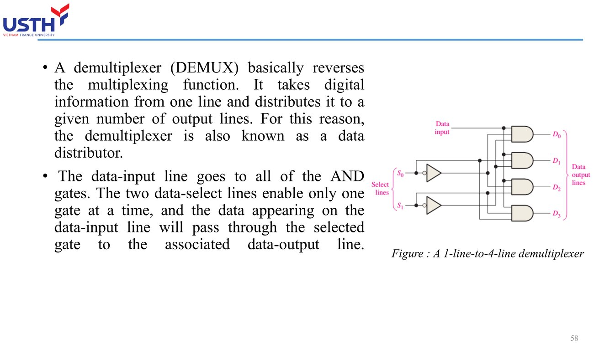
📖 Giải thích cho người mới bắt đầu
Demultiplexer là “gương soi ngược” của multiplexer: thay vì gộp N nguồn thành 1 đường chung, nó lấy MỘT luồng dữ liệu duy nhất và “rải” nó ra đúng 1 trong N đích, theo đúng địa chỉ trên đường chọn.
Điểm kỹ thuật thú vị: về mặt mạch điện, demultiplexer thường dùng CHUNG cấu trúc vật lý với decoder (chỉ khác vai trò gán cho một chân), đúng như đã lưu ý ở Phần 3: một IC có thể “đóng vai” decoder hoặc demultiplexer tuỳ vào cách kỹ sư sử dụng chân dữ liệu của nó.
Ví dụ thực tế: mux dữ liệu độ cao trên A320 (Tooley Figure 9.21)
Bộ dồn kênh kép 4 kênh chọn 1 trong 4 nguồn dữ liệu độ cao (độ cao đã chọn, độ cao thực tế từ ADC trái/phải) để đưa vào bộ mã hoá dữ liệu nối tiếp ARINC 429, chỉ cần 2 đường chọn nhị phân thay vì 4 đường truyền vật lý riêng biệt.
📖 Giải thích cho người mới bắt đầu
Ví dụ dồn kênh dữ liệu độ cao trên A320 cho thấy multiplexer giải quyết đúng vấn đề thực tế: thay vì phải có 4 đường truyền vật lý riêng biệt cho 4 nguồn dữ liệu độ cao khác nhau (mỗi nguồn cần một bộ mã hoá ARINC 429 riêng, tốn kém và phức tạp), hệ thống chỉ cần MỘT bộ mã hoá dùng chung, với multiplexer đứng trước để lần lượt chọn nguồn nào được mã hoá tại mỗi thời điểm.
Chỉ cần 2 đường chọn nhị phân (đủ phân biệt 4 nguồn theo công thức n=log₂(4)=2) là đủ điều khiển toàn bộ quá trình chọn nguồn, tiết kiệm đáng kể phần cứng so với việc nhân bản bộ mã hoá cho từng nguồn riêng.
Bảng: số kênh, số đường chọn, và số dây tiết kiệm được
| Số kênh N | Đường chọn n | Không dùng mux (N dây) |
|---|---|---|
| 4 | 2 | 4 |
| 8 | 3 | 8 |
| 16 | 4 | 16 |
Với mux, chỉ cần n đường chọn + 1 đường dữ liệu ra chung, thay vì N đường dữ liệu song song.
📖 Giải thích cho người mới bắt đầu
Bảng này làm nổi bật rõ lợi ích tiết kiệm dây dẫn của multiplexer bằng con số cụ thể: với 16 kênh, nếu không dùng mux cần tới 16 đường dây riêng biệt chạy song song, còn dùng mux chỉ cần 4 đường chọn cộng 1 đường dữ liệu chung, tổng 5 đường.
Khoảng cách tiết kiệm càng lớn khi số kênh càng nhiều: đây là lý do multiplexer gần như luôn được dùng bất cứ khi nào cần truyền dữ liệu từ nhiều nguồn qua một khoảng cách xa hoặc qua một không gian dây dẫn hạn chế (như bên trong thân máy bay), thay vì kéo hàng chục đường dây riêng biệt.
Ứng dụng hàng không: chia sẻ 1 bus hiển thị cho nhiều tham số
Màn hình ECAM cần luân phiên hiển thị nhiều tham số động cơ (N1, EGT, N2, dầu bôi trơn...). Một mux tốc độ cao có thể chọn lần lượt từng nguồn tín hiệu để đưa vào bộ xử lý hiển thị chung, giảm số kênh xử lý tín hiệu độc lập cần thiết.
📖 Giải thích cho người mới bắt đầu
Màn hình ECAM cần hiển thị luân phiên rất nhiều tham số động cơ khác nhau (N1, EGT, N2, dầu bôi trơn...), nhưng bộ xử lý hiển thị phía sau màn hình không cần và không nên có một kênh xử lý tín hiệu riêng biệt cho MỖI tham số.
Giải pháp dùng multiplexer tốc độ cao: lần lượt “quét” qua từng nguồn tín hiệu tham số, đưa mỗi nguồn vào đúng một kênh xử lý DUY NHẤT tại từng thời điểm, giống hệt cách mắt người quét nhanh qua nhiều dòng chữ để đọc cả trang mà không cần nhìn tất cả các dòng cùng lúc. Kỹ thuật này giảm đáng kể số lượng mạch xử lý tín hiệu độc lập cần thiết trong hệ thống.
⚠️ Cảnh báo: đường chọn không đủ sẽ làm mất dữ liệu, không phải lỗi ngẫu nhiên
Nếu thiết kế mux 8 kênh nhưng chỉ dùng 2 đường chọn (chỉ phân biệt được 4 tổ hợp), 4 kênh còn lại sẽ KHÔNG BAO GIỜ được chọn tới: đây là lỗi thiết kế có thể dự đoán trước bằng công thức n=log₂(N), không phải lỗi ngẫu nhiên cần dò tìm bằng thực nghiệm.
📖 Giải thích cho người mới bắt đầu
Đây là một lỗi thiết kế có thể TIÊN LƯỢNG TRƯỚC bằng toán học, không phải một lỗi ngẫu nhiên cần dò tìm bằng thực nghiệm: nếu một mux cần chọn giữa 8 kênh nhưng chỉ dùng 2 đường chọn (chỉ tạo được 2²=4 tổ hợp địa chỉ khác nhau), thì CHẮC CHẮN có 4 kênh còn lại (kênh 4 đến 7) sẽ không bao giờ được chọn tới, bất kể đường chọn được set giá trị gì.
Trước khi lắp ráp mạch thực tế, luôn áp dụng công thức n=log₂(N) để tính TRƯỚC số đường chọn cần thiết: với 8 kênh cần đúng 3 đường chọn (2³=8), không phải 2. Đây là cách phát hiện lỗi thiết kế ngay trên giấy, tiết kiệm rất nhiều thời gian debug phần cứng sau này.
Tự kiểm tra nhanh
Bạn cần chọn 1 trong 6 cảm biến nhiệt độ để đưa vào 1 bộ xử lý duy nhất. Cần tối thiểu bao nhiêu đường chọn? Có kênh nào bị 'thừa' không sử dụng đến trong không gian địa chỉ tạo ra không?
📖 Giải thích cho người mới bắt đầu
Bài tự luyện áp dụng công thức n=log₂(N) cho trường hợp N=6 (không phải luỹ thừa của 2 chẵn): vì 2²=4 chưa đủ (nhỏ hơn 6) và 2³=8 đã đủ (lớn hơn hoặc bằng 6), cần tối thiểu 3 đường chọn.
Điều thú vị của trường hợp này: với 3 đường chọn tạo ra 2³=8 tổ hợp địa chỉ có thể, nhưng chỉ có 6 cảm biến thực tế cần chọn, nghĩa là CÓ 2 tổ hợp địa chỉ “thừa” (ví dụ ứng với địa chỉ 110 và 111) không nối tới cảm biến nào cả. Đây là hiện tượng bình thường và không tránh khỏi mỗi khi số kênh thực tế không phải là luỹ thừa chẵn của 2, không phải là lỗi thiết kế.
Áp dụng trong hệ thống avionics
- Ví dụ thực tế: bộ dồn kênh ARINC 429 4 kênh (Figure 9.21, Tooley)
- Chuyển đổi mã BCD sang 7 đoạn cho hiển thị
Tổng quan: MSI logic trong avionics dùng ở đâu?
Theo Tooley, MSI logic trong máy bay tập trung ở 5 nhóm ứng dụng chính: giải mã địa chỉ, mã hoá ưu tiên, dồn kênh dữ liệu, chuyển đổi mã BCD-sang-7-đoạn, và kiểm tra chẵn lẻ (parity) trên đường truyền dữ liệu.
📖 Giải thích cho người mới bắt đầu
Slide này liệt kê đúng 5 “vai trò nghề nghiệp” mà mạch MSI đảm nhận trong một chiếc máy bay thực tế, và điều thú vị là cả 5 vai trò này đều đã được học chi tiết ở các phần trước: giải mã địa chỉ (Phần 3), mã hoá ưu tiên (Phần 3), dồn kênh dữ liệu (Phần 4), chuyển đổi mã BCD-sang-7-đoạn (Phần 3), và kiểm tra chẵn lẻ (mới, sẽ học ở slide sau).
Hãy dùng slide này như một “mục lục tổng kết”: nếu còn mơ hồ về vai trò nào, đây là lúc quay lại đúng phần tương ứng trước khi tiếp tục xem các ví dụ thực tế phía sau.
Ví dụ lại: bộ dồn kênh ARINC 429 (Figure 9.21)
4 nguồn dữ liệu độ cao được dồn kênh trước khi đưa vào bộ mã hoá dữ liệu nối tiếp ARINC 429 : đây là ví dụ trực tiếp lấy từ sách, minh hoạ multiplexer trong hệ thống altimeter thực tế.
📖 Giải thích cho người mới bắt đầu
Đây không phải một ví dụ mới, mà là việc NHẮC LẠI có chủ đích ví dụ multiplexer dữ liệu độ cao đã học ở Phần 4, để nhấn mạnh rằng đây là một ứng dụng THẬT được trích trực tiếp từ sách giáo trình (Tooley Figure 9.21), không phải một tình huống giả định.
Việc gặp lại cùng một ví dụ ở hai phần khác nhau (một lần tập trung vào NGUYÊN LÝ multiplexer, một lần tập trung vào VAI TRÒ trong hệ thống altimeter) giúp củng cố hiểu biết theo hai góc nhìn bổ sung cho nhau.
Ví dụ: parity checker trên bus dữ liệu
Mạch tạo/kiểm tra chẵn lẻ (built chủ yếu từ chuỗi cổng XOR) thêm 1 bit parity vào dữ liệu truyền trên bus. Bên nhận tính lại parity và so sánh: nếu khác, phát hiện có lỗi truyền dữ liệu (dù không xác định được lỗi ở bit nào).
📖 Giải thích cho người mới bắt đầu
Mạch kiểm tra chẵn lẻ (parity) là một ứng dụng đơn giản nhưng cực kỳ hiệu quả của cổng XOR đã học ở Module 02: XOR vốn chỉ ra 1 khi số lượng đầu vào bằng 1 là LẺ, nên chuỗi nhiều cổng XOR nối tiếp có thể tính ra “tổng số bit 1 trong dữ liệu là chẵn hay lẻ” chỉ bằng phép toán logic thuần tuý, không cần bộ đếm phức tạp.
Nguyên lý phát hiện lỗi: bên gửi tính sẵn bit parity sao cho tổng số bit 1 (kể cả bit parity) luôn là số chẵn (hoặc luôn lẻ, tuỳ quy ước). Bên nhận tính lại và so sánh: nếu kết quả khác với parity đã gửi, chắc chắn có lỗi xảy ra trong quá trình truyền, dù không biết chính xác lỗi ở bit nào.
Ví dụ tính: parity chẵn (even parity) của 1 byte dữ liệu
Byte dữ liệu 10110010 có 4 bit 1 → số chẵn.
📖 Giải thích cho người mới bắt đầu
Đây là bài tập áp dụng cụ thể nguyên lý parity chẵn: đếm số bit 1 trong byte 10110010, ta được đúng 4 bit 1 (ở các vị trí có giá trị 1), một số CHẴN.
Vì mục tiêu của parity chẵn là giữ TỔNG số bit 1 (kể cả bit parity thêm vào) luôn là số chẵn, và hiện tại đã có sẵn 4 (chẵn), bit parity cần thêm vào phải là 0 để không làm thay đổi tính chẵn của tổng. Nếu byte gốc có số bit 1 là lẻ, bit parity thêm vào phải là 1 để “kéo” tổng về chẵn.
Ví dụ: giải mã địa chỉ trong hệ thống backplane bus
Trong hệ thống nhiều board cắm chung 1 backplane bus (vd VMEbus), mỗi board có 1 mã địa chỉ cố định. Mạch giải mã trên mỗi board so sánh địa chỉ trên bus với mã của chính nó: chỉ board khớp địa chỉ mới đáp ứng, tránh xung đột dữ liệu.
📖 Giải thích cho người mới bắt đầu
Trong một hệ thống nhiều board mạch cùng cắm chung một backplane bus (đường bus vật lý chạy xuyên suốt khung máy), mỗi board cần “nhận diện” được khi nào dữ liệu trên bus là dành cho chính nó, không phải cho board khác.
Giải pháp: mỗi board được gán một mã địa chỉ cố định, và có sẵn một mạch giải mã địa chỉ (decoder, đúng nguyên lý đã học ở Phần 3) liên tục so sánh địa chỉ đang xuất hiện trên bus với mã địa chỉ riêng của board đó. Chỉ khi hai địa chỉ khớp nhau, board mới “lên tiếng” đáp ứng, các board khác giữ im lặng, tránh xung đột dữ liệu trên cùng một bus chung.
Ví dụ: hiển thị N1, EGT trên ECAM bằng BCD-sang-7-đoạn
Giá trị N1 động cơ (vd 92%) được xử lý dưới dạng BCD nội bộ, sau đó bộ chuyển đổi mã BCD-sang-7-đoạn tạo tín hiệu điều khiển đúng các đoạn LED/segment hiển thị để phi công đọc trực tiếp con số thập phân, không cần diễn giải mã nhị phân.
📖 Giải thích cho người mới bắt đầu
Đây là một ví dụ thực tế hoàn chỉnh, kết hợp CẢ HAI khái niệm đã học: giá trị N1 (tốc độ động cơ, ví dụ 92%) được lưu trữ và xử lý nội bộ dưới dạng BCD (đúng nguyên lý BCD đã học ở Module 01), sau đó được đưa qua bộ chuyển đổi mã BCD-sang-7-đoạn (đúng nguyên lý decoder đặc biệt đã học ở Phần 3 module này) để tạo tín hiệu điều khiển đúng các đoạn LED cần bật.
Kết quả cuối cùng: phi công nhìn thấy trực tiếp con số “92” quen thuộc trên màn hình ECAM, không cần “giải mã” bất kỳ chuỗi nhị phân hay hex nào trong đầu, dù toàn bộ quá trình xử lý bên trong đều dựa trên các nguyên lý số học nhị phân/BCD đã học.
Bảng tổng hợp: mạch MSI ↔ ứng dụng avionics thực tế
| Mạch MSI | Ứng dụng avionics |
|---|---|
| Multiplexer | Dồn kênh dữ liệu độ cao trước khi mã hoá ARINC 429 |
| Decoder | Giải mã địa chỉ bộ nhớ / board trên backplane bus |
| Encoder ưu tiên | Mã hoá phím bấm trên bàn phím MCDU |
| Code converter | BCD-sang-7-đoạn cho hiển thị ECAM |
| Parity generator/checker | Kiểm tra lỗi truyền trên bus dữ liệu |
📖 Giải thích cho người mới bắt đầu
Bảng tổng hợp cuối cùng này gom lại đúng 5 mạch MSI đã học (multiplexer, decoder, encoder ưu tiên, code converter, parity generator/checker) cùng với ĐÚNG MỘT ứng dụng avionics cụ thể cho mỗi mạch, giúp bạn nhìn thấy ngay mối liên hệ giữa lý thuyết trừu tượng và ứng dụng thực tế cụ thể chỉ trong một bảng.
Hãy dùng bảng này như bài tự kiểm tra ngược: che cột “ứng dụng avionics” lại, thử tự nhớ xem mỗi mạch MSI có thể ứng dụng ở đâu trên máy bay, rồi mở ra kiểm tra lại.
Vì sao MSI (thay vì SSI hoặc VLSI) phù hợp cho các chức năng này?
Các chức năng trên (giải mã, mã hoá, dồn kênh) đều là logic cố định, không cần khả năng lập trình phức tạp của VLSI, nhưng cũng phức tạp hơn một vài cổng SSI đơn lẻ: MSI là lựa chọn cân bằng giữa chi phí, độ tin cậy (ít điểm hàn hơn khi gộp nhiều cổng vào 1 IC) và đủ chức năng cần thiết.
📖 Giải thích cho người mới bắt đầu
Câu hỏi này giúp hiểu SÂU hơn về lý do lựa chọn công nghệ, không chỉ dừng lại ở việc biết định nghĩa. Các chức năng như giải mã, mã hoá, dồn kênh đều là LOGIC CỐ ĐỊNH (không cần thay đổi hành vi sau khi sản xuất), nên không cần tới khả năng LẬP TRÌNH phức tạp và chi phí cao của VLSI.
Nhưng đồng thời các chức năng này cũng phức tạp hơn một vài cổng logic SSI đơn lẻ (cần từ hàng chục tới hàng trăm cổng phối hợp). MSI là điểm cân bằng tối ưu: đủ chức năng, chi phí hợp lý, và quan trọng với avionics, GỘP nhiều cổng vào một IC nghĩa là ÍT mối hàn hơn so với dùng nhiều IC SSI rời rạc, giúp tăng độ tin cậy tổng thể của hệ thống.
⚠️ Cảnh báo: đường trễ tín hiệu (propagation delay) cộng dồn qua nhiều tầng MSI
Khi ghép tầng nhiều IC MSI (vd 2 tầng decoder, hoặc mux rồi tới encoder), độ trễ lan truyền tín hiệu của từng tầng CỘNG DỒN lại. Với hệ thống cần đáp ứng thời gian thực nghiêm ngặt (vd cảnh báo an toàn), phải tính tổng trễ qua toàn bộ chuỗi MSI, không chỉ xét trễ của từng IC riêng lẻ.
📖 Giải thích cho người mới bắt đầu
Đây là một bài học về TƯ DUY HỆ THỐNG thay vì chỉ nhìn từng linh kiện riêng lẻ: mỗi IC MSI có độ trễ lan truyền tín hiệu (propagation delay) riêng, thường chỉ vài nano giây, tưởng chừng không đáng kể.
Nhưng khi ghép NHIỀU tầng IC nối tiếp nhau (ví dụ tín hiệu phải đi qua 2 tầng decoder rồi tới một mux, rồi tới một encoder), các độ trễ nhỏ này CỘNG DỒN lại thành một độ trễ tổng đáng kể. Với hệ thống cần phản ứng cực nhanh (như cảnh báo an toàn khẩn cấp), kỹ sư bắt buộc phải tính TỔNG độ trễ qua toàn bộ chuỗi tín hiệu, không chỉ xét độ trễ của từng IC riêng lẻ, để đảm bảo hệ thống vẫn kịp phản ứng trong thời gian yêu cầu.
Tổng kết module & tự kiểm tra
Bạn đã đi qua: quy mô tích hợp (SSI→VLSI), fan-in/fan-out, decoder/encoder, multiplexer, và ứng dụng thực tế trong avionics. Hãy tự hỏi: nếu phải thiết kế một mạch chọn 1 trong 5 cảm biến áp suất để hiển thị luân phiên trên 1 màn hình, bạn sẽ dùng mạch MSI nào, cần bao nhiêu đường chọn, và tại sao?
📖 Giải thích cho người mới bắt đầu
Đây là bài tổng kết yêu cầu vận dụng LIÊN TIẾP nhiều khái niệm đã học trong toàn bộ module: chọn 1 trong 5 cảm biến áp suất cần một multiplexer (đúng nguyên lý Phần 4), với công thức n=log₂(5) cho thấy cần tối thiểu 3 đường chọn (vì 2²=4 chưa đủ, 2³=8 mới đủ).
Câu hỏi “tại sao” đòi hỏi giải thích được: multiplexer tiết kiệm dây dẫn hơn hẳn so với việc kéo 5 đường tín hiệu riêng biệt tới bộ xử lý hiển thị, chỉ cần 3 đường chọn cộng 1 đường dữ liệu chung. Nếu bạn trả lời được câu hỏi này một cách trôi chảy, bạn đã sẵn sàng cho bộ câu hỏi trắc nghiệm cuối trang và cho Module 04 tiếp theo.
Số đường chọn cần thiết cho bộ dồn kênh
- Nsố kênh dữ liệu đầu vào của multiplexer
- nsố đường chọn (select lines) cần thiết
📜 Bối cảnh lý thuyết & lịch sử
Mạch tích hợp đầu tiên được Jack Kilby (Texas Instruments) trình diễn năm 1958, tiếp theo là phương án thực tế hơn của Robert Noyce (Fairchild) năm 1959 dựa trên công nghệ planar. Từ đó, định luật Moore (1965) dự đoán số transistor trên một chip tăng gấp đôi mỗi 18-24 tháng: xu hướng phản ánh trực tiếp qua các mức tích hợp SSI→MSI→LSI→VLSI được trình bày trong chương này của Tooley.
🔎 Case study thực tế: bộ dồn kênh dữ liệu độ cao trên A320
Hệ thống altimeter trên A320 cần chọn 1 trong 4 nguồn dữ liệu độ cao (độ cao đã chọn và độ cao thực tế từ ADC trái/phải) để đưa vào bộ mã hoá dữ liệu nối tiếp ARINC 429 (xem Figure 9.21, Tooley). Một bộ dồn kênh kép 4 kênh (dual four-channel multiplexer) thực hiện việc chuyển mạch này chỉ với 2 đường chọn nhị phân, thay vì cần 4 đường truyền vật lý riêng biệt: tiết kiệm đáng kể trọng lượng dây dẫn trên máy bay.
⚠️ Bẫy hay gặp
Nhầm lẫn giữa 'demultiplexer' (1 vào → nhiều ra) và 'decoder' (giải mã địa chỉ): cả hai đôi khi dùng chung một IC vật lý (vì decoder không có input dữ liệu cũng có thể hoạt động như demux khi gán 1 đường làm dữ liệu, còn lại làm địa chỉ chọn), nhưng về chức năng mạch, chúng phục vụ hai mục đích khác nhau.
Tự kiểm tra nhanh (10 câu, ưu tiên câu gốc)
Luyện sâu
Mở ngân hàng câu hỏi của module (55 + 11)
Notebook Jupyter
Tải notebook (đã chạy sẵn, có đầu ra thật):
- 03_ic-multiplexing.ipynb (VI+EN)
Lỗi và nghi vấn của nguồn
Chưa ghi nhận lỗi nào cho module này.